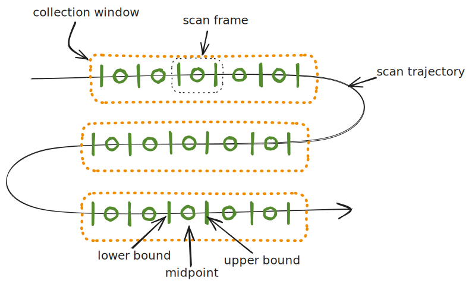

What is the difference between step and fly scanning#
A scan is defined as actuating some change in zero or more Devices, then collecting data from zero or more detectors to observe that change. Some examples are:
moving a motorized stage with a sample on it, and observing its interaction with the X-ray beam on a pair of detectors simultaneously
taking a series of time resolved detector frames to observe the degredation of a sample
changing the temperature of the sample and observing it with a detector
The actuators and detectors in a scan are typically different devices, although many actuators allow the current readback position to be read, so will also be used as a source of data during a scan.
We can classify these data collections into two broad categories: step scanning, and fly scanning.
Step scanning: The system performs a sequence of discrete operations: actuate a change, settle, acquire data, repeat. This ensures well-defined data points but may result in longer total acquisition times. Bluesky plans specify this type of measurement through devices’ Movable, Triggerable and Readable protocols.
Fly scanning: Short for “on-the-fly scanning,” this method involves kicking off the actuation and detection processes simultaneously, with some form of synchronization that allows the data to be correlated after the scan. This effectively hands over some degree of control to the hardware, with bluesky supervising the progress it is making without being in the loop. The benefits are typically faster scans and smoother coverage of the scanned domain, but it adds complexity in the supervision and synchronization of concurrent processes. Devices capable of this mode implement the Preparable, Flyable and Collectable protocols.
Filewriting detectors additionally implement WritesStreamAssets to report the data written to disk during the scan, either at each data point in a step scan, or periodically during a fly scan.
See also
What plan stubs will do to Devices for more information on what plan stubs are available that call these protocols
Scan frames and collection windows#
Consider some trajectory in 2D space:

Along the fly scan trajectory we define a discrete sequence of (typically disjoint rather than adjacent) collection windows, which are spatial intervals where a coherent block of data is acquired. The data collection block is the scan frame, defined as a vector of lower, mid and upper points in scan space. Scan frames map directly to Bluesky Events, and typically corresponds to a single detector exposure, though they may be composed of multiple detector frames.
Synchronisation mechanisms#
A fly scan must define the start of each collection window and a mechanism for the acquisition of frames within those windows. Various mechanisms can be used, depending on the available hardware and experimental requirements. Not all combinations of collection window and scan frame triggers provide useful results, so some examples are given below.
Collection window triggers#
Software trigger: The control software signals the start of the next window. For example, a plan kicks off a linear motor move, and starts a free-running detector when it expects the motor to reach a desired constant velocity.
Time trigger: A window opens at predefined time intervals (this could be a software or a hardware trigger e.g. from a PandA box).
Readback trigger: A hardware trigger sent when a signal from a sensor or encoder value is positively evaluated through some position compare logic.
Setpoint trigger: The same control signal sent to some device (e.g. a sample environment controller) also triggering the start of the collection window.
Scan frame triggers#
Internal device trigger: The detector itself generates internal triggers based on its configuration.
Time trigger: Hardware triggers sent out at regularly spaced intervals in time.
Readback trigger: Same as for collection windows readback triggers.
Setpoint trigger: Same as for collection windows setpoint triggers.
When a hardware trigger is sent to a detector, it can either be edge triggered (start a frame of a fixed duration on rising edge of trigger) or level triggered (start a frame on rising edge of trigger, stop the frame on falling edge).
Examples#
With all this in mind, let us consider typical fly scanning setups given a motor and a detector.
Software collection window with internal triggers#
The simplest form of fly scanning uses software synchronisation for opening a collection window, and letting a detector trigger itself internally. We effectively tell the devices to “go” at the same time, relying on timestamps to match up the data. The strategy may involve
Calculating the motor run-up distance and move to the start, setting up the detector to take the right number of frames,
Starting the motor moving to its end point and waiting for the amount of time it takes to accelerate
Starting the detector
Waiting until the detector has finished taking frames and the motor has stopped moving
This process would produce two data stream: a “monitor” stream of timestamped motor readback positions at the control system update rate; and a “primary” stream of detector frames with embedded timestamps when they were received by the control point.
Software collection window with time triggers#
If we introduce a PandA box into the system we can trigger the collection window as above, but let the PandA produce time triggers for the detector. The strategy is similar:
Calculate motor run-up distance and move to the start, setting the detector into triggered mode and PandA to send the right number of triggers
Start the motor moving to its end point and wait for the amount of time it takes to accelerate
Start the PandA sending triggers
Wait until the PandA, detector and motor have finished
The data streams produced are a “monitor” stream of timestamped motor readback positions at the control system update rate; and a “primary” stream of PandA captured timestamps and detector frames. If the motor happens to be plugged into the PandA then we can dispense with the monitor stream as the motor positions can be captured and produced by the PandA.
Readback collection window with readback triggers#
If the motor positions are tracked in the PandA we can use a PCOMP block to trigger both collection windows and frames within. This gives the advantage that our detector will trigger at the precise motor positions we expect, but the detector must be able to support level triggering so that it doesn’t miss frames if the motor travels faster than expected in a particular frame. The strategy and data streams are as in the previous example.
Readback collection window with time triggers#
Similar to above, but if the detector is only capable of edge triggering then we need to give it a constant time period so it doesn’t miss frames. We do this by sending regularly spaced triggers from a PandA and capturing the positions that the motors were at.
Setpoint collection window with setpoint triggers#
It is worth mentioning that the Flyer protocol is also used in hardware-triggered step scanning. Though the collection occurs while the scanned axis is stationary, the devices are prepared, kicked off, and completed in a similar way to fly scans.